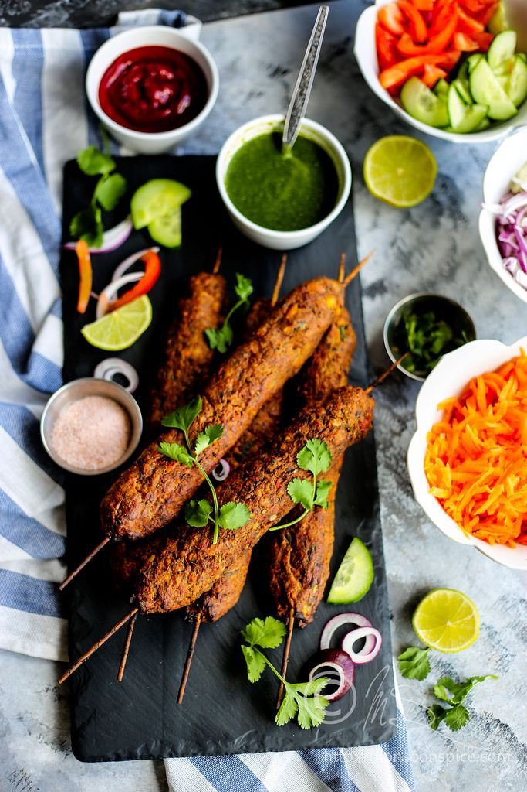
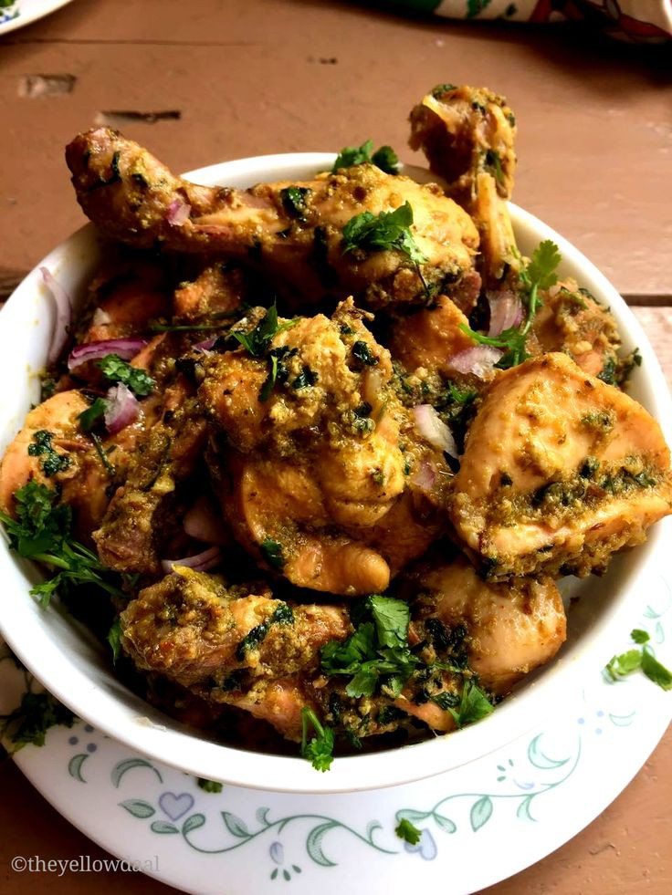
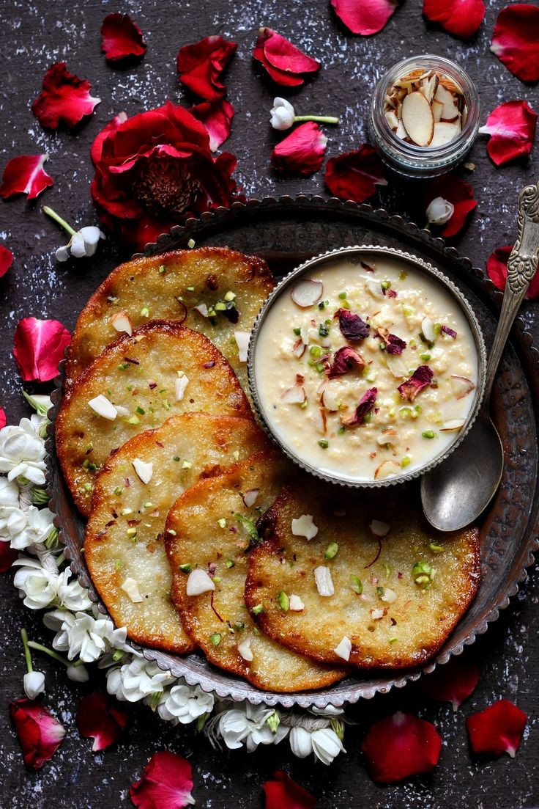
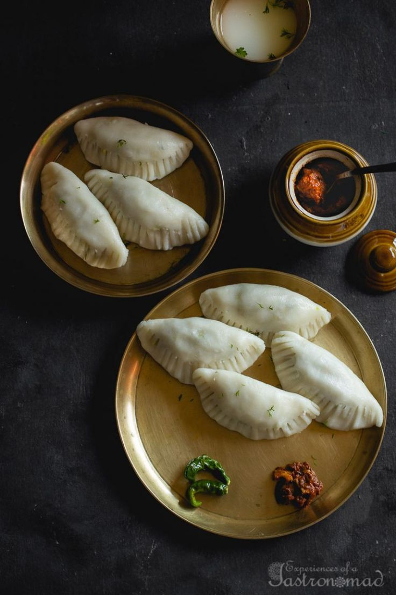
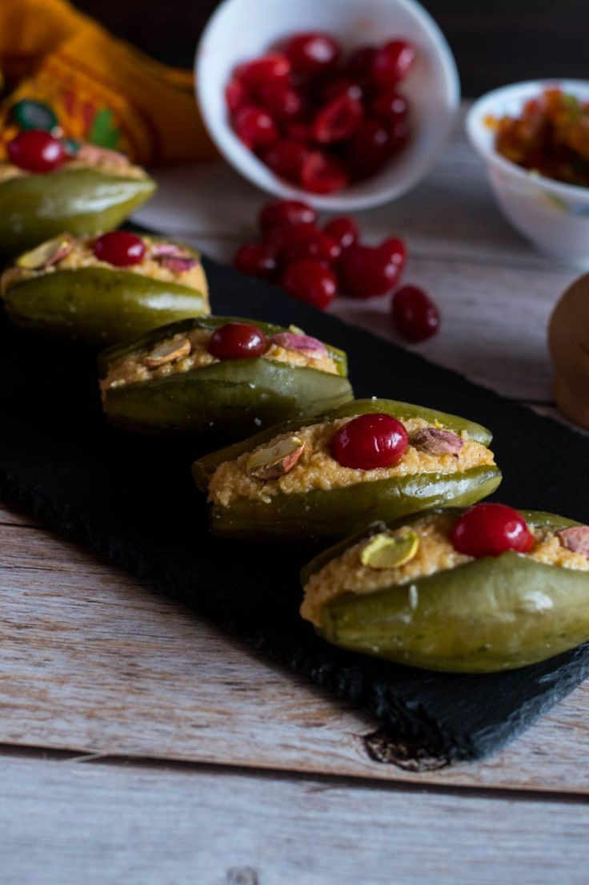

The historically rich land of Bihar is equally famous for the plethora of delicious that feature in its cuisine. The scrumption and exotic Bihar dishes are highly capable of tingling the taste bud of every food connoisseur.Here is list of must try Bihar food dishes, dishes which are beyond the staple Sattu or Parval Ki Mithai, which will surely leave you craving for more!
Mutton kebabs |
Chicken korma | ||
|---|---|---|---|
Malpua | |||
Khaja |
Parwal ki mithai-bi |